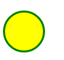

HTML5 SVG
این عنصر html5 یکی دیگر از عوامل ایجاد گرافیک های html5 است. html5 svg
به شما این امکان را می دهد که گرافیک های برداری و مقیاس پذیر بسازید و
در صفحات وب آن ها را تعریف کنید. همچنین این عنصر توسط W3C توصیه می
شود. با استفاده از عنصر svg شما قادر خواهید بود مسیرها، جعبه ها، حلقه
ها، متن ها و تصاویر گرافیکی را ایجاد کنید.
برای آشنایی با کاربرد های این عنصر می توانید به گرافیک های html5 زیر و
نحوه نوشتن کد آن ها دقت کنید.

دایره svg
این دایره ساده را بدون استفاده از کد های جاوا اسکریپت و با قدرت html5 می توان ایجاد کرد. برای ایجاد یک دایره زرد رنگ از کد های زیر استفاده می کنیم
کود من
<!DOCTYPE html>
<html>
<body>
<svg width="100" height="100">
<circle cx="50" cy="50" r="40" stroke="green" stroke-width="4" fill="yellow" />
</svg>
</body>
</html>
مقایسه canvas و svg
هردو از گرافیک های html5 هستند اما عملا به شکل های مختلفی کار می کنند. Canvas به رزولوشن وابسته است زیرا همانطور که گفته شد بر اساس پیکسل ترسیم می شود. در مقایل svg می تواند به راحتی در صفحه نمایش های مختلف به کار گرفته شود.
سوالات HTML
سوال ۱۸ : در HTML عنصر SVG مستقیما در صفحه اضافه می شود.